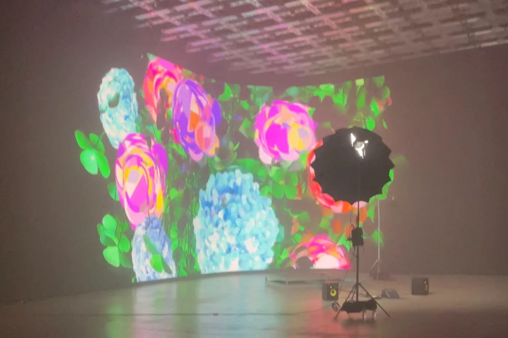
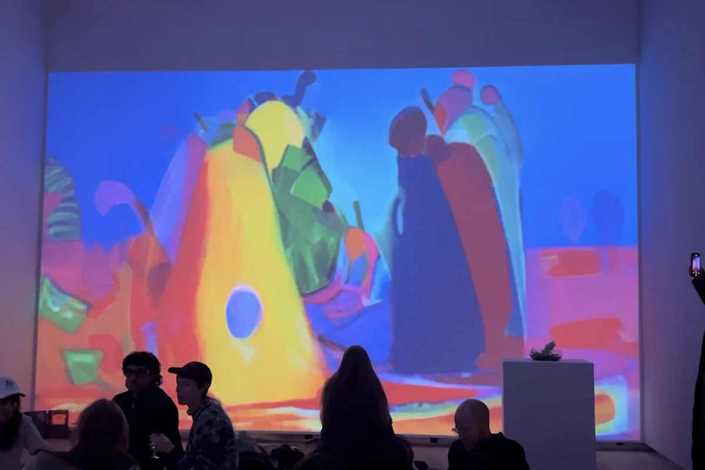
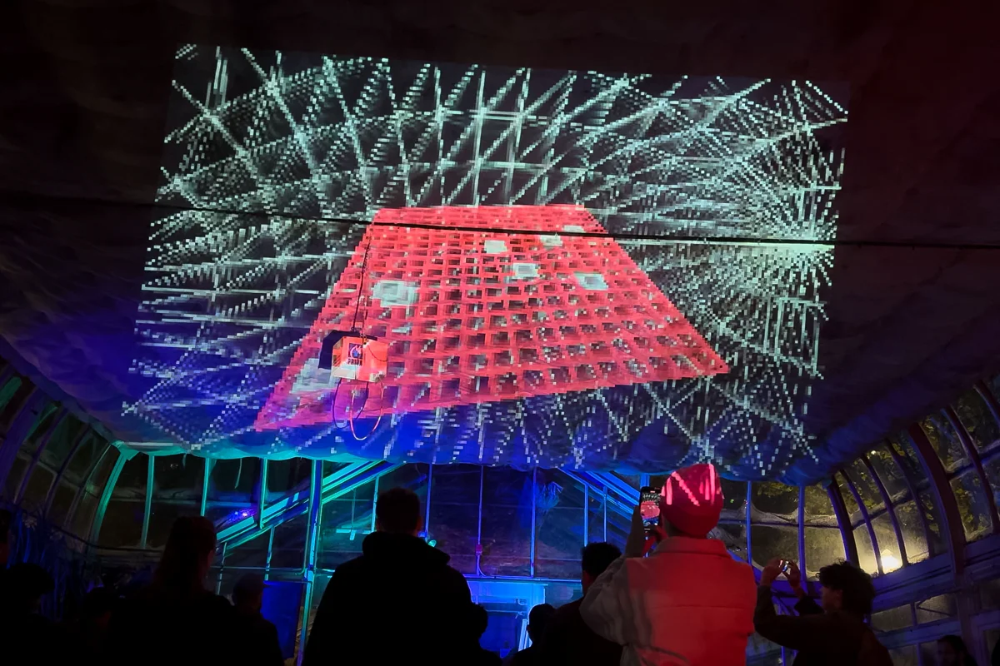
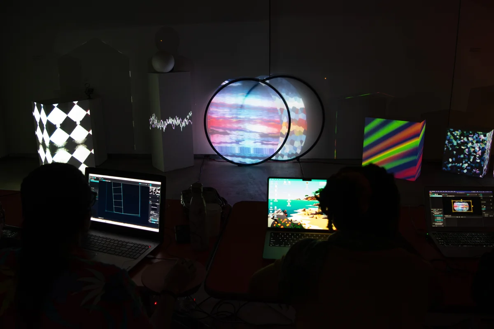
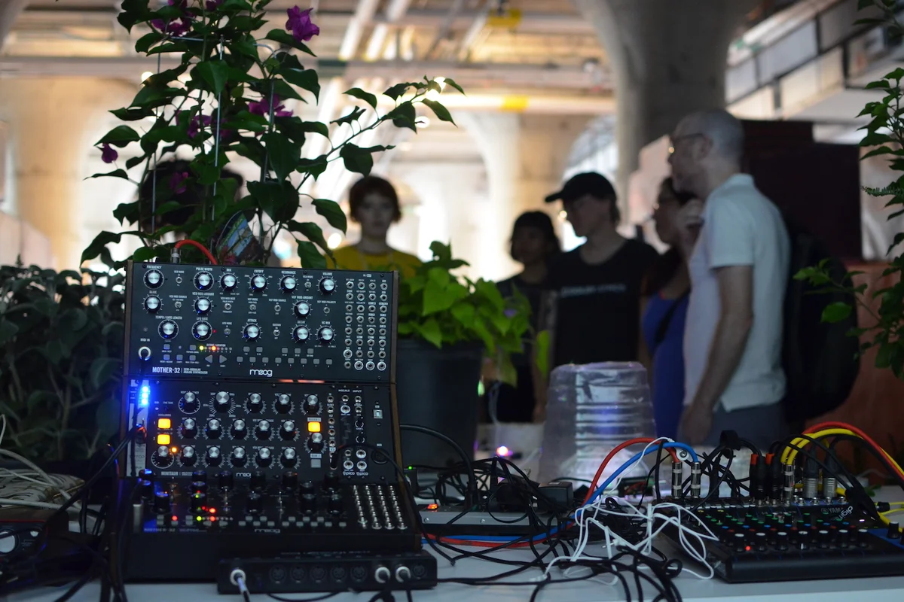
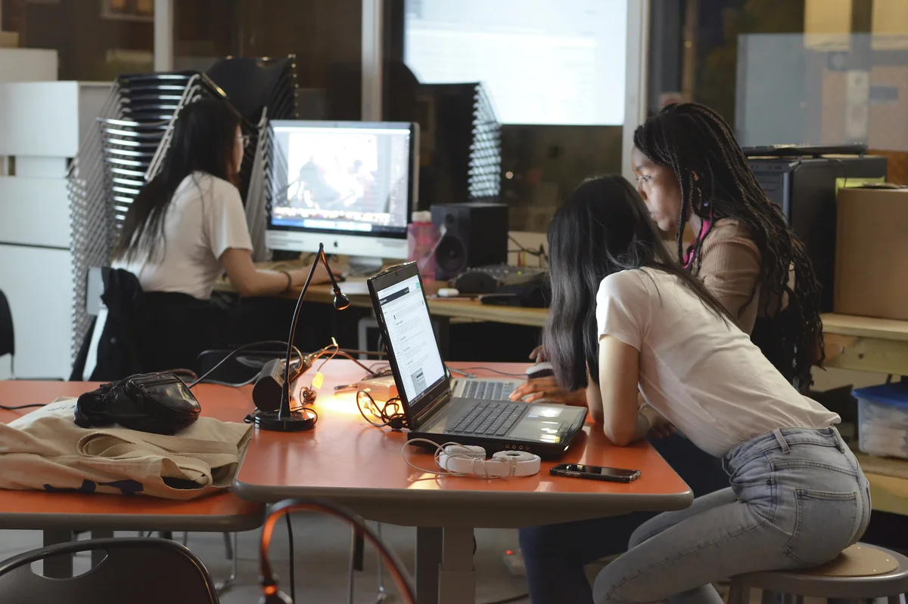
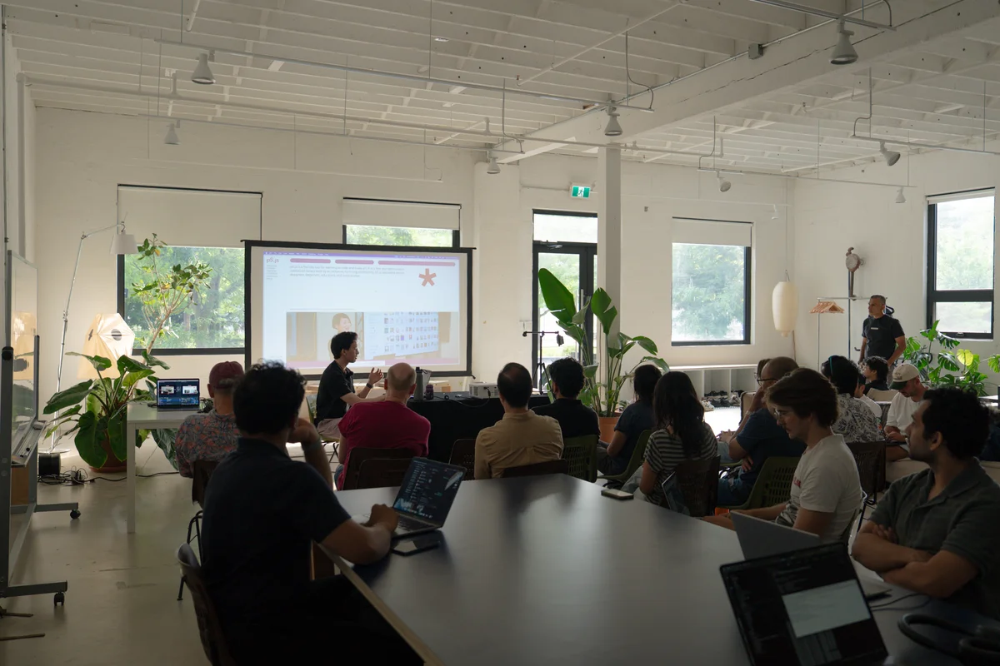

About
About
soft_launch is an education collective working to make new media practices accessible to artists and technologists alike in Toronto and beyond. Our first series of weekend intensives built foundations in TouchDesigner, Generative AI, and Creative Code, which we will continue in future sessions. Check our Instagram or upcoming workshops for what's next.
Facilitators
Tara Rose Morris
Artist and creative technologist using technology for live performances and immersive installations exploring art, code, and liminal ontologies of embodiment.
Benjamin Lappalainen
Creative technologist, artist, and educator making interactive installations, kinetic sculpture, and creative code that reveal how perceptive and generative technologies actually work.
Facilitator Work

Tara's FLOWERS LED wall installation, PHNTM Labs (2023)
Photo: Tara Rose Morris

Benjamin's SKETCHING FLOCK, InterAccess OpenHDMI (2024)
Photo: Benjamin Lappalainen

Tara's MITHAI performance, InterAccess P2P (2024)
Photo: Tara Rose Morris

Benjamin's live audio-reactive visuals, Long Winter 13.1 (2024)
Photo: Benjamin Lappalainen

Projecting the Future workshop (2023)
Photo: Simon Rojas

BioSonification installation, MOCA (2019)
Photo: Tosca Terán

Open Studio community showcase
Photo: Courtesy of InterAccess

PROGRAM09: MEDIAPIPE, New Stadium (2025)
Photo: PROGRAM media team